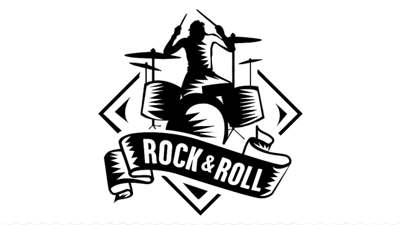
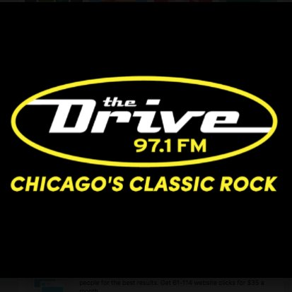

00:00 00:00 Sabaton name:Bismarck year:2019 album:Standalone single genre:Heavy metal country:Sweeden
 Choose a radio station List of radio stations Blown Classic Rock Rock FM Classic Rock 94.5FM  The Drive Triple Ultra Spoon